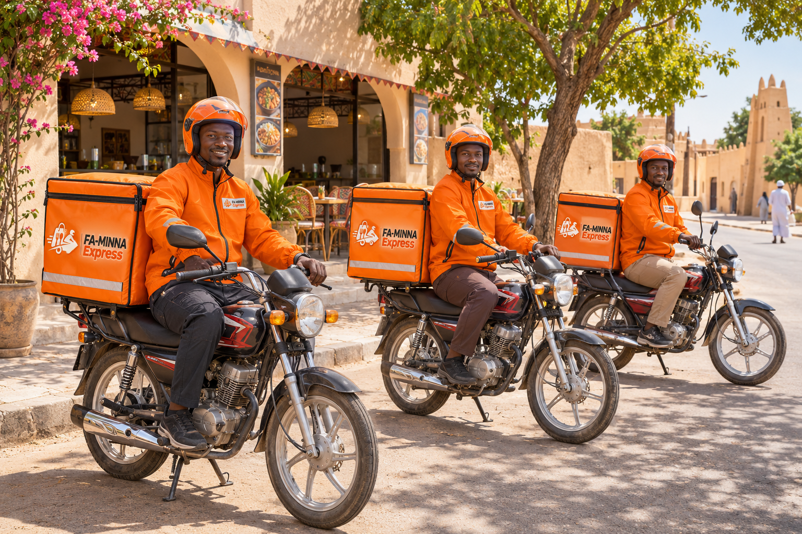

01
Explore
Choose your delivery point and discover restaurants in Abéché. Find a favorite or try something new.
ROOTED IN ABÉCHÉ
FA-MINNA Express is building a simpler way to discover local food and connect with the people who make our city special. Starting with restaurants, our ambition reaches further: local growers, independent shops and everyday essentials.
Explore local restaurantsA LITTLE EASIER, EVERY DAY
From finding your favorite meal to the knock at your door.
Choose your delivery point and discover restaurants in Abéché. Find a favorite or try something new.

When a restaurant's menu is available, choose your dishes and review your address, total and delivery details at checkout.

After your order is accepted, follow its progress from your account and get ready to enjoy your meal.
YOUR CITY. YOUR FAVORITES.
From a familiar neighborhood kitchen to a new local discovery, we want to make it easier to enjoy what Abéché has to offer. FA-MINNA Express starts with food, with plans to bring agricultural products and independent shops into the same experience.
Discover our purpose
A PURPOSE BEYOND DELIVERY
WHAT DRIVES US
To make everyday shopping and food delivery simpler in Abéché by connecting people with local restaurants, growers and independent sellers. We aim to create practical opportunities for businesses and riders, with clear information and a service people can rely on.
WHERE WE'RE HEADING
To grow into a trusted local marketplace, rooted in Abéché and reaching more communities across Chad. We see a future where a meal, fresh agricultural products and everyday essentials are easier to access, and local businesses can grow alongside the people they serve.
Run a restaurant, grow produce or own a shop? We'd love to hear from you.